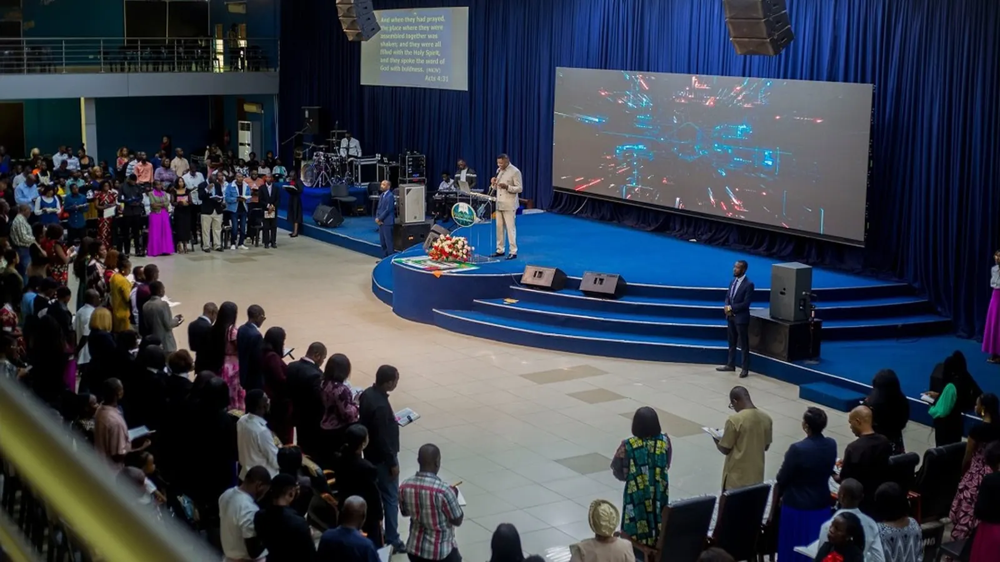

Prayer that stands in the gap
Morning Glory, Midnight Watch, dry fasts, and overnight vigils keep the house on the altar and contend for families, leaders, and the nation.
Zambian languages
World languages

17 years · 2009—2026
Since 9 March 2009, Shalom Embassy Ministries International has carried one commission: to preach the full Gospel, heal the brokenhearted, and see every life restored to wholeness in Christ.
The anniversary
What began in Lusaka’s Kanyama area has grown into a family of believers gathered around the Word, prayer, healing, and deliverance. In March 2026, the Shalom Embassy family marked 17 years of God’s faithfulness at the Main Auditorium in Garden House.
This anniversary is not a celebration of a building or a name. It is a testimony of what God has done in ordinary people who trusted Him — the sick made whole, the bound set free, families restored, and a new generation raised in the fear of the Lord.
By the numbers
Verified milestones from the life and labour of Shalom Embassy Ministries International.
What the years have built
Six expressions of one commission, each serving the wholeness of the believer and the reach of the Gospel.
Explore our ministriesMorning Glory, Midnight Watch, dry fasts, and overnight vigils keep the house on the altar and contend for families, leaders, and the nation.
Weekly healing and deliverance services and monthly 7-hour encounters minister the power of Christ to spirit, soul, and body.
Over 21 branches across Lusaka, rural villages, and other parts of Zambia carry the same mandate to communities beyond the headquarters.
Pastor Bupe Sinyangwe leads a women’s ministry raising watchmen, strengthening families, and reaching vulnerable women and girls in villages.
Young men and women are equipped in identity, purity, and calling through youth services, conferences, and worship encounters.
Sermons, prayer books, devotionals, and online broadcasts carry the Word beyond the auditorium to a growing global family.
Where it shows
Every number above points back to what God has done in real lives.
Lives changed, families restored, destinies turned around. People healed, delivered, and lifted.
Churches planted across Lusaka and rural Zambia, carrying the same mandate to new communities.
A growing global online family connected through broadcasts, prayer, and the Word.
Morning Glory, Midnight Watch, dry fasts, and overnight vigils contending for families and the nation.
Sons and daughters of this house now serve God in many places across Zambia and beyond.
Village outreach, vulnerable women and girls, and practical care for communities in need.
Our big gatherings
These are the moments the Shalom Embassy family gathers for.
Monthly healing and deliverance encounter, every last Sunday, 07:00 — 14:00 CAT.
Quarterly gathering of the whole house, 07:00 — 14:00 CAT.
Wednesday overnight prayer and deliverance, 21:00 — 04:00 CAT.
The anniversary
In March 2026, the Shalom Embassy family gathered at Garden House to thank God for 17 years of grace, growth, healing, and deliverance, with guest minister Bishop Dr. Edgar Ng’ambi.
Be part of the next chapter
Come and worship with us this Sunday, or reach out and let us pray with you.